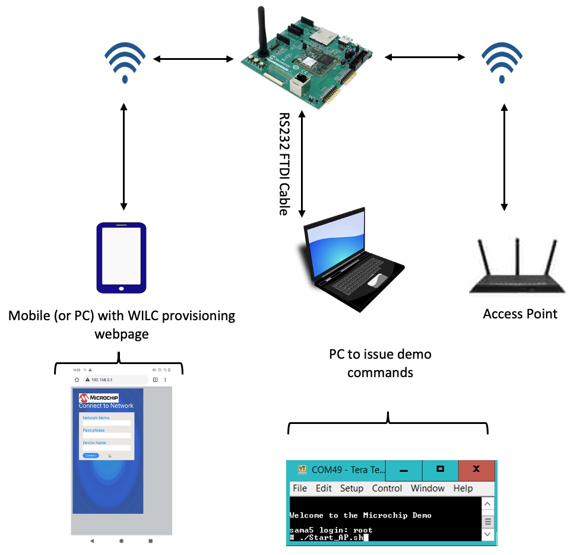
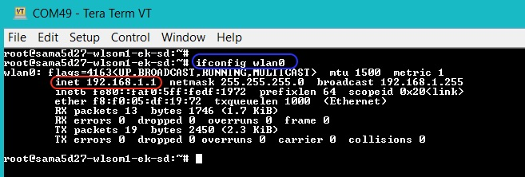
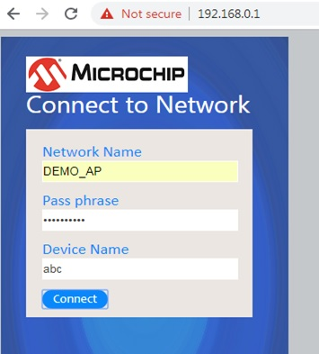

WebBasedWiFiProvisioning
The SAMA5D27 WLSOM1 EK boards enables to configure the WiFi credentials over the HTML based webpage.
The WILC module comes up as a Access point and hosts a webpage. The web page allows the user to configure desired AP(router) configuration like SSID, Passphrase using a webpage. The demo makes use of following components,
- WILC in AP mode: Enables clients to connect and configure home AP credentials.
- Hostapd application: Handles the connections from different STA(stations), enables the user to choose different configurations(open/secured, etc..) for AP mode
- DHCP Server: Responsible for distributing IP addresses to all the connected clients(STA's)
- NGINX Web Server: Hosts the web server which lets the user to provide the home AP credentials.
- Websocket Application: Acts as a CGI function to receive the credential information from webserver
 Following are the steps to run the Web based WiFi Provisioning demo
- On power on reset, enter the following command:
./Start_AP.sh
- SoftAP SSID is “wilc1000_SoftAP” and it’s in open network. The SoftAP configuration can be modified by changing the configuration file in the Start_AP.sh script.
- User can connect any Wi-Fi device (laptop/mobile) to DUT for provisioning.
- SoftAP is configured with IP address as “192.168.0.1”(Buildroot build) or “192.168.1.1”(Yocto build). User can check with “ifconfig” command on serial terminal.
 - User needs to open web browser from the connected (laptop/mobile)device and enter DUT IP address on URL.
- The webpage provides three option to user for provisioning the device,
- Network Name: Desired AP SSID configuration
- Pass Phrase: Desired AP Passphrase configuration. This field need to be empty for open network configuration.
- Device Name: DUT name (user choice)

- User needs to fill the details based on the AP configuration to which device needs to be connected and then press connect.
- On pressing Connect, device will save the configuration and reboot.
- On bootup, device enters STA mode and will make a connection with configured AP.


| I | Attachment | Action | Size | Date | Who | Comment |
|---|---|---|---|---|---|---|
| |
start_ap_cmd.jpg | manage | 31.5 K | 2021-01-29 - 18:23 | HemanthTenkod | |
| |
webpage_wilc.jpg | manage | 35.2 K | 2020-04-16 - 03:05 | HemanthTenkod |
r8 - 03 Mar 2021 - 18:58:16 - HemanthTenkod

{kind=link}
{kind=link}
{kind=link}
{kind=link}
Copyright © by the contributing authors. All material on this collaboration platform is the property of the contributing authors.
Linux® is the registered trademark of Linus Torvalds in the U.S. and other countries.
Microchip® and others, are registered trademarks or trademarks of Microchip Technology Inc. and its subsidiaries. 
Arm® and others are registered trademarks or trademarks of Arm Limited (or its affiliates). Other terms and product names may be trademarks of others.
Ideas, requests, contributions ? Connect to LinksToCommunities page.